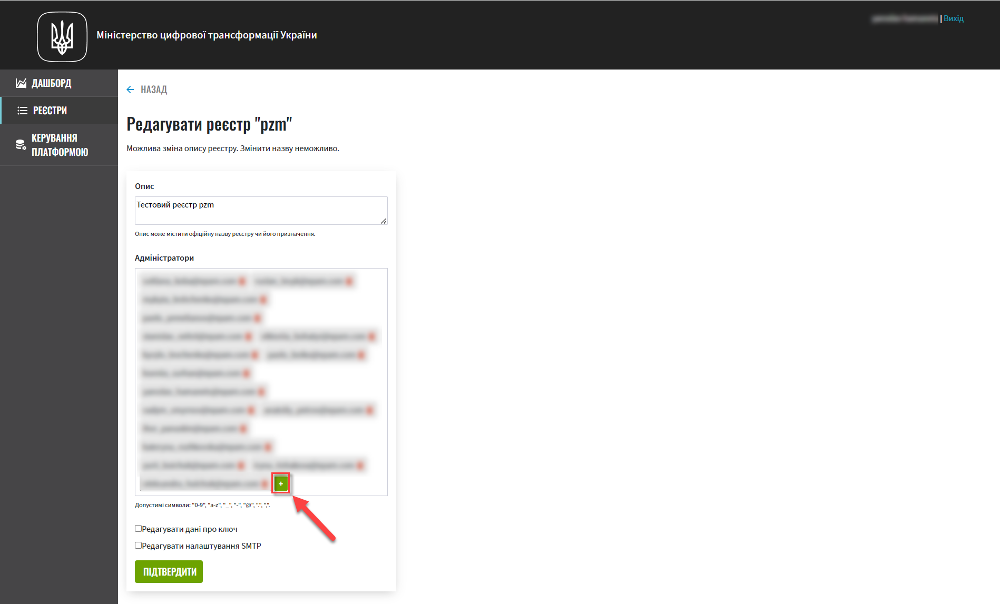

Управління користувачами
- 1. Загальний опис
- 2. Адміністрування доступу користувачів до Кабінету посадової особи
- 2.1. Створення окремого користувача у Keycloak та надання прав доступу
- 2.2. Імпорт N користувачів через файл до Keycloak та надання прав доступу
- 3. Адміністрування доступу користувачів до сервісу Redash
- 4. Створення та надання доступу адміністраторам
- 5. Експорт користувачів з Keycloak
|
Рекомендуємо виконувати усі налаштування, використовуючи браузер Google Chrome для стабільної роботи усіх сервісів. |
1. Загальний опис
Створення нових користувачів та надання їм прав доступу до інструментів реєстру здійснюється в консолі адміністратора сервісу Keycloak.
|
Посилання до сервісу Keycloak відповідного реєстру можливо отримати, наприклад, в Openshift, для цього необхідно перейти до меню
Або за наявним посиланням у Сontrolplane, обравши відповідний реєстр у меню
|

Доступ до реалмів реєстру
Адміністратор Платформи повинен мати доступ до 4-х reaml[1] реєстру: -admin, officer-portal, -citizen-portal, external-system.
| Realm | Призначення |
|---|---|
|
Реалм для доступу до адміністративних інструментів, таких як Gerrit, Jenkins, Camunda реєстру. |
|
Призначення ролей для доступу до Кабінету Посадової особи (Officer Portal) та звітів (Redash). |
|
Призначення ролей для доступу до Кабінету отримувача послуг (Citizen Portal). |
|
Призначення ролей для доступу до зовнішніх систем (наприклад, "Трембіта" та ін.). |
Типи ролей для Кабінетів посадової особи та отримувача послуг реєстру
Ролі у системі Keycloak розподілені на системні та регламентні:
-
Системні — створюються Платформою під час розгортання реєстру або встановлення Платформи (наприклад,
officer,citizen,auditorтощо). -
Регламентні — створюються під час розгортання реєстру та налаштовуються в регламенті реєстру → директорія
roles→ у відповідному конфігураційному файлі.yml.
Наприклад, створення ролей Кабінету посадової особи відбувається через налаштування їх у відповідному файлі officer.yml:
|
2. Адміністрування доступу користувачів до Кабінету посадової особи
2.1. Створення окремого користувача у Keycloak та надання прав доступу
Для створення нового користувача у Keycloak, необхідно виконати наступні кроки:
-
Перейдіть до realm
-officer-portalвідповідного реєстру:-
На вкладці Users натисніть
View all users; -
Натисніть кнопку
Add user.
-
-
У відкритому вікні введіть дані користувача:
-
Username— унікальний ідентифікатор користувача у системі. -
Email— електронна пошта користувача (поле не є обов’язковим). Використовується для системи Redash, де налаштування параметрів авторизації виконані за email (детальніше за посиланням). -
First Name— ім’я користувача (поле не є обов’язковим). -
Last Name— прізвище (поле не є обов’язковим). -
User Enabled— позначка, що користувач активований у системі (якщо вона не активна, доступ такого користувача до систем буде обмежено).

-
-
Натисніть кнопку
Save. -
Перейдіть на вкладку Role Mappings та призначте необхідні ролі користувачу. Натисніть кнопку
Add selected.
-
Надані ролі будуть показані в секції Assigned Roles.

-
Перейдіть на вкладку Attributes та встановіть значення для ключів параметрів
drfo,edrpou,fullName, що пов’язані з кваліфікованим електронним ключем (КЕП) користувача таKATOTTG. Новий параметр додається після натискання кнопкиAdd.-
drfo— особистий реєстраційний номер облікової картки платника податків (РНОКПП) посадової особи. Якщо через релігійні переконання особа не отримувала РНОКПП, необхідно вказати серію та номер паспорта або номер ID-картки. -
edrpou— унікальний ідентифікаційний номер юридичної особи в Єдиному державному реєстрі підприємств та організацій України (8 цифр). -
fullName— прізвище, ім’я, по батькові (за наявності).У разі невідповідності значень атрибутів до значень, заданих у КЕП, користувач не матиме можливості увійти до Кабінету посадової особи та підписувати задачі КЕП.
-
KATOTTG(до заповнення для реєстрів, які використовують рольову модель за територіальною ознакою) — перелік кодів з Кодифікатора адміністративно-територіальних одиниць та територій територіальних громад. Після визначення коду KATOTTG для до Keycloak потрібно записати скорочене значення коду. Користувач Кабінету посадової особи матиме доступ до записів саме тієї області/району/територіальної громади тощо, код якої буде вказано.Для визначення значення коду KATOTTG перейдіть за посиланням.
Знайдіть найактуальніший файл «Кодифікатор». Для зручності використовуйте додаткове фільтрування по колонці «Категорія об’єкта» файлу, яка містить наступні значення:
Рівень
Значення
Перший рівень
«O» – Автономна Республіка Крим, області
«K» – міста, що мають спеціальний статус
Другий рівень
«P» – райони в областях та Автономній Республіці Крим
Третій рівень
«H» – території територіальних громад (назви територіальних громад) в областях, територіальні громади Автономної Республіки Крим
Четвертий рівень
«M» – міста
«T» – селища міського типу
«C» – села
«X» – селища
Додатковий рівень
«B» – райони в містах
- Приклад 1:
-
Необхідно надати доступ користувачу до Кабінету посадової особи на рівні Миргородської територіальної громади (Третій рівень) Полтавської області. Для цього:
-
в колонці «Категорія об’єкта» виберіть значення «Н».
-
в колонці «Назва об’єкта» введіть в пошуку назву територіальної громади «Миргородська».
-
скопіюйте з колонки «Третій рівень» код значення територіальної одиниці (UA53060230000098362).
-
згідно розшифровки нижче визначте який з блоків є останнім ненульовим, видаліть всі нульові блоки разом з системним номером і заповніть до Keykloak тільки це значення. В прикладі 1 до Keykloak потрібно занести UA5306023 (блоки до рівня територіальної громади є ненульовими).

-
- Приклад 2:
-
Необхідно надати доступ користувачу до Кабінету посадової особи на рівні Шевченківського району м. Полтава (Додатковий рівень). Для цього:
-
спочатку в колонці «Категорія об’єкта» виберіть значення «О».
-
в колонці «Назва об’єкта» введіть в пошуку назву області «Полтавська».
-
скопіюйте з колонки «Перший рівень» код значення області (UA53000000000028050).
-
за допомогою фільтра залиште лише ті значення, які в колонці «Перший рівень» містять значення UA53000000000028050.
-
в колонці «Категорія об’єкта» виберіть значення «В».
-
в колонці «Назва об’єкта» введіть в пошуку назву району «Шевченківський».
-
скопіюйте з колонки «Додатковий рівень» код значення територіальної одиниці (UA53080370010339303).
-
згідно з прикладом 1 визначте який з блоків є останнім ненульовим, видаліть усі нульові блоки разом з системним номером і заповніть до Keykloak тільки це значення. В прикладі 2 до Keykloak потрібно занести UA530803700103 (блоки до рівня районів у містах є ненульовими).
-
Якщо користувач матиме доступ до декількох територіальних одиниць, їх коди вносяться до Keycloak з роздільником ##. Максимально можлива кількість значень для одного кристувача – 16.
У випадку надання користувачу доступу до записів всієї України в значенні KATOTTG потрібно вказати тільки два символи – UA.
-
додатково
будь-який інший атрибутз довільною назвою та значенням за потреби (наприклад, назва організації, область, район, населений пункт тощо), якщо надалі буде необхідність будувати на основі нього статистику щодо створених користувачів. Заборонено включати до значення спеціальні символи ([, ], {, }, \, "), а також значення, які містять понад 255 символів. Назва кожного додаткового атрибута обов’язково повинна бути однаковою для всіх користувачів реєстру і мати унікальну назву серед інших параметрів.

-
-
Натисніть кнопку
Save.
Користувача успішно створено.
2.1.1. Видалення ролі користувачу
Щоб видалити надані користувачу ролі виконайте наступні кроки:
-
Оберіть необхідного користувача. Для цього оберіть відповідний realm, перейдіть до розділу
Users, натиснітьView all usersта оберіть зі списку користувача.
-
Виберіть зі списку ролі, що необхідно видалити та натисніть
Remove selected.
-
Видалені ролі стануть доступними та будуть показані в секції Available Role.

2.2. Імпорт N користувачів через файл до Keycloak та надання прав доступу
2.2.1. Налаштування атрибутів адміністратора в Keycloak
Попередньо необхідно в Keycloak разово виконати наступні дії:
-
Перейдіть у відповідний
-adminреалм і виберіть розділUsers. -
Оберіть користувача адміністратора, що імпортує файл, і перейдіть у розділ
Attributes. -
Створіть три ключі для атрибутів:
-
fullName— ПІБ; -
drfo— особистий реєстраційний номер облікової картки платника податків (РНОКПП); -
edrpou— унікальний ідентифікаційний номер юридичної особи в Єдиному державному реєстрі підприємств та організацій України (ЄДРПОУ).
-
-
Натисніть
Save./import-users(officer)-00.png)
|

|
Налаштування атрибутів в Keycloak виконується один раз. При наступних процедурах імпорту користувачів виконувати її немає потреби. |
2.2.2. Імпорт користувачів через Кабінет адміністратора регламенту
-
Перейдіть до Кабінету адміністратора регламентів.
Посилання до Кабінету адміністратора регламентів відповідного реєстру можливо отримати, наприклад, в Openshift, для цього необхідно перейти до меню
Networking→Routes, обрати уProjectнеобхідний проєкт, у пошуку вказатиadmin-portalта перейти за посиланням у колонціLocation.
/import-users(officer)-01.png)
-
Оберіть розділ
Управління користувачамита натисніть кнопкуДодати користувачів.
-
Завантажте шаблон файлу
Users_Upload.csvдля заповнення даними користувачів. -
Ознайомтесь з
Поясненнями до заповнення таблиці "Users_Upload.csv".pdf.Обов’язково зверніть увагу на особливості заповнення параметрів шалону файлу, щоб уникнути помилок.
Якщо під час імпорту користувачів з файлу буде виявлена хоча б одна помилка, то процес імпорту буде перервано і жоден з користувачів не буде доданий до системи Keycloak. Див. схему нижче.

-
Заповніть файл даними користувачів, яким потрібно надати доступ до реєстру.
Вимоги до файлу:
-
максимальний розмір файлу —
30 МБ; -
формат файлу —
CSV; -
кодування файлу —
UTF-8.
Якщо файл не відповідає одному з вищеописаних критеріїв, користувач отримає відповідне повідомлення:
-
Файл занадто великого розміру.
-
Невідповідний формат файлу.
-
Файл невідповідного кодування.
Це означатиме, що завантаження файлу не відбулося. Див. схему нижче.
Валідаційні правила для даних у файлі:
- Атрибут
drfo: -
обов’язковий до заповнення, є унікальним у зв’язці з атрибутами
edrpouтаfullName; - Атрибут
edrpou: -
обов’язковий до заповнення, є унікальним у зв’язці з атрибутами
drfoтаfullName, для введення доступні лише цифри; - Атрибут
fullName: -
обов’язковий до заповнення, є унікальним у зв’язці з атрибутами
drfoтаedrpou; - Атрибут
Realm Roles: -
обов’язковий до заповнення, може містити декілька ролей (системні та регламентні ролі, при наявності), які вказані через кому. Вказані ролі повинні бути вже створені в Officer Realm у відповідному реєстрі у Keycloak.
- Атрибут
KATOTTG: -
обов’язковий до заповнення для реєстрів, які використовують рольову модель за територіальною ознакою, для інших випадків необов’язковий. Значення складається із літер «UA», за якими слідують 17 цифр (наприклад, UA53060230000098362). Якщо користувач матиме доступ до декількох територіальних одиниць, їх коди вносяться через кому. Максимально можлива кількість значень для одного кристувача – 16. У випадку надання користувачу доступу до записів всієї України в значенні KATOTTG потрібно вказати тільки два символи – UA.
- Будь-який інший атрибут:
-
не обов’язковий атрибут з довільною назвою та значенням за потреби (наприклад, назва організації, область, район, населений пункт тощо), якщо надалі буде необхідність будувати на основі нього статистику щодо створених користувачів. Заборонено включати до значення спеціальні символи ([, ], {, }, \, "), а також значення, які містять понад 255 символів.
Назва кожного додаткового атрибута обов’язково повинна бути однаковою для всіх користувачів реєстру і мати унікальну назву серед інших параметрів.
-
-
Завантажте файл перетягнувши його у відповідне поле
Завантажити перелік посадових осібабо обравши його у відповідній директорії.
-
Натисніть кнопку
Почати імпорт.
-
На наступному кроці буде відображено, що файл прийнято в обробку. Зачекайте декілька хвилин до повного завантаження користувачів реєстру. Також у повідомленні зазначене посилання на сервіс Kibana, де можна переглянути результат опрацювання файлу: кількість оброблених записів, кількість успішних, кількість помилкових.

2.2.3. Перегляд результату виконання процесу в сервісі Kibana
Модуль валідує весь файл і пише всі знайдені проблеми в сховище технічних логів Kibana. У логах фіксується інформація про кожен запис, який був пропущений при створенні, з зазначеною причиною пропуску, а успішно відпрацьовані порядково не фіксуються (показується лише загальна кількість успішних). Також присвоюється унікальний ідентифікатор користувача в Keycloak (Username), який дублюється.
|
Під час першого використання сервісу Kibana необхідно створити Для цього слід виконати наступні кроки:
|


2.2.3.1. Загальні валідаційні правила для перевірки даних користувачів з файлу.
Загальну схему валідаційних правил представлено нижче.
/import-users(officer).jpg)
У разі порушення валідаційного правила запису даних у файлі буде показана відповідна помилка:
-
обов’язкове поле пусте
абоскладається тільки з пробілівабомає кілька значень через кому замість одного (для поля edrpou, drfo, fullName) — помилка про відсутність обов’язкового атрибута; -
поле
edrpouмістить недопустимі символи (має складатися лише з цифр)-- помилка про присутність неприпустимих символів; -
вказана роль відсутня у переліку наявних ролей Officer Realm відповідного реєстру у Keycloak — помилка про відсутність вказаної ролі;
-
структура файлу не відповідає заданій — помилка про невідповідність файлу закладеній структурі.
В такому випадку процес імпорту користувачів не відбувається.
|
Якщо імпорт користувачів у Keycloak відбувся з порушенням валідаційних правил, потрібно повторно з самого початку повторити процедуру імпорту користувачів з файлу, попередньо виконавши потрібні корегування. |
Виконання часткового імпорту користувачів з помилкою можливе в наступних випадках:
-
користувач із таким username і такими атрибутами (
drfo,edrpou,fullName) вже є в Keycloak; -
користувач із таким
username, але з іншими атрибутами вже є в Keycloak; -
користувач із такими атрибутами, але з іншим
usernameвже є в Keycloak (тоді в логах буде вказано, який реальнийusernameу користувача у Keycloak); -
користувач із такими атрибутами вже зустрівся в CSV-файлі раніше (дублювання записів).
-
у процесі імпорту виникла помилка в Keycloak.
В такому випадку процес імпорту користувачів відбувається частково, записи користувачів з помилками фіксуються в логах Kibana як Failed to import та Skipped, і вони не додаються до системи Keycloak, а усі інші успішні записи користувачів додаються до системи Keycloak.
Алгоритм запису логів при імпорті користувачів з помилкою:
-
Якщо один із запитів в групі з N записів повертає помилку, запис користувачів саме з цієї групи починається порядково. Користувач, на якому сталася помилка, пропускається.
-
У логах фіксується інформація про всі записи, пропущені при створенні, з фіксацією причини пропуску (позначені як
SkippedабоFailed to import).
|
Якщо імпорт користувачів у Keycloak відбувся з помилками (часткове створення користувачів), потрібно наново завантажити файл з користувачами, яких не вдалося створити, виконавши потрібні корегування. |
2.2.3.2. Результату виконання процесу імпорту з помилкою
Першочергово необхідно в логах знайти відповідний запис з загальним результатом опрацювання імпорту.
-
Total users in file— відображає загальну кількість користувачів, що було додано через файл; -
Successfully imported— кількість успішно доданих користувачів; -
Skipped- кількість пропущених користувачів; -
Failed to import— кількість користувачів, що не вдалося додати через помилку з сервісом Keycloak.
За кожним користувачем, що не вдалося додати до сервісу (пропущені) буде показано окремий запис у лолах з інформацією про валідаційну помилку, з зазначенням номера рядка та причини пропуску.
Якщо імпорт користувачів у Keycloak відбувся з помилками (часткове створення користувачів), потрібно наново підвантажити файл з користувачами, яких не вдалося створити (виконавши потрібні корегування).
2.2.3.3. Успішний результат виконання процесу імпорту користувачів
У разі успішного проходження валідаційних правил виконується процес імпорту всіх користувачів з файлу у Keycloak. Skipped та Failed to import вказуються с нулями.
Total users in file відповідає кількості Successfully imported.

Створення користувачів у Keycloak відбувається групами (окремими запитами) по N записів (значення N задається в налаштуваннях процесу).
За результатом успішного проведення імпорту користувачів у Keycloak створюються облікові записи користувачів з відповідними атрибутами та ролями.
/import-users(officer)-11.png)
2.2.3.4. Перегляд логів аудиту в "Журналі управління користувачами" системи Redash
Адміністратор безпеки (з відповідним правом доступу) має можливість переглянути в Redash "Журнал управління користувачами", наприклад, з метою проведення аудиту надання доступу користувачам.
|
Для надання прав доступу до системи Redash у користувача має бути роль Посилання до системи Redash можна знайти в консолі Openshift → Networking → Routes, та обравши необхідний проєкт знайти реалм
|
/import-users(officer)-14.png)
У журналі відображено всі записи, які відповідають наступним параметрам: applicationName="Keycloak", type="SYSTEM_EVENT".
Кожен користувач, якого було створено через імпорт файлом, відображається окремим рядком з зазначеним набором додаткових параметрів.
/import-users(officer)-12.png)
- Звіт містить наступні параметри
Назва в Redash |
Назва параметру |
Опис параметру |
Ідентифікатор запиту |
|
Ідентифікатор запиту з MDC |
Назва події в БД |
|
"USER_CREATE" |
Назва додатку/поди |
|
Назва пайплайну для імпорту користувачів (pod_name) |
Дата та час операції |
|
Мітка часу |
ПІБ адміністратора |
|
ПІБ користувача який запустив процес імпорту |
Ідентифікатор адміністратора |
|
Keycloak ідентифікатор користувача який запустив процес імпорту |
ДРФО адміністратора |
|
ДРФО код користувача який запустив процес імпорту |
ID створеного користувача |
|
Keycloak ідентифікатор створеного користувача |
Username створеного користувача |
|
username створеного користувача |
Користувач активний |
|
true/false |
КАТОТТГ |
|
Кодифікатор адміністративно-територіальних одиниць та територій територіальних громад. Може містити кілька значень. |
Довільні поля |
|
Власні (довільні) додаткові атрибути користувача |
Ідентифікатор реалму |
|
Keycloak ідентифікатор реалму в якому був створений користувач |
Ім’я реалму |
|
Ім’я реалму в якому був створений користувач |
Ім’я клієнта в Keycloak |
|
Значення "Client ID" атрибуту реалма від імені якого був створений користувач |
Ідентифікатор клієнта в Keycloak |
|
Keycloak-ідентифікатор клієнта від імені якого був створений користувач |
Ролі створеного користувача |
|
Ролі створеного користувача |
Ідентифікатор CSV файлу |
|
Ідентифікатор CSV файлу у Ceph бакеті |
Оригінальне ім’я CSV файлу |
|
Оригінальне ім’я CSV файлу, з якого проводився імпорт користувачів |
Контрольна сума CSV файлу |
|
Чек сума завантаженого користувачем CSV файлу (незашифрованого) |
Функціональністю сервісу Redash передбачено можливість фільтрування, сортування параметрів та експорту сформованої вибірки.
/import-users(officer)-13.png)
3. Адміністрування доступу користувачів до сервісу Redash
За замовчуванням користувачам Кабінету посадової особи встановлюється роль officer, яка також використовується для сервісу Redash. Користувачі з цією роллю мають доступ до стандартних звітів відповідного реєстру.
3.1. Надання розширених прав користувачу (аудитор або адміністратор)
-
Перейдіть до redash-viewer. Для цього в консолі openshift виконайте наступні кроки:
-
Перейдіть до розділу
Networking→Routes. -
Оберіть необхідний проєкт.
-
В рядку пошуку вкажіть
redash-viewer. -
Перейдіть за посиланням у колонці
Location.
-
-
Виконайте авторизацію в сервісі.
-
У полі
Emailвкажіть значення —user@mail.com. -
У полі
Passwordвкажіть секрет, який можливо отримати, виконавши наступні кроки:-
В консолі openshift перейдіть до розділу
Workloads→Secrets. -
Оберіть необхідний проєкт.
-
В рядку пошуку вкажіть
redash-setup-secret. -
Перейдіть за посиланням у колонці
Name. -
Копіюйте значення секрету внизу сторінки, щоб використати його для автентифікації.
-
-
Після введення значень
EmailтаPasswordнатиснітьLog In.
-
-
Перейдіть до меню
Редагувати профіль. -
Відкрийте вкладку
Usersта оберіть користувача. -
Оберіть зі списку необхідні ролі для користувача.
Оберіть роль
auditorу разі необхідності доступу до системних звітів Redash - "Журнал подiй системи" та "Журнал дій користувача". Рольadminнадає доступ до всіх наявних звітів. -
Натисніть
Saveдля збереження внесених змін.
3.2. Налаштування автентифікації в Redash за логіном
У разі імпорту користувачів через файл, значення email не зазначається, що надалі потребує налаштувань SSO автентифікації в Redash. Потрібно змінити налаштування SAML клієнта в Keycloak для Redash, щоб використовувати поле username, як ідентифікатора користувача (NameID).
Для того, щоб змінити параметр для автентифікації, виконайте наступні кроки.
-
Перейдіть до realm
-officer-portalвідповідного реєстру у Keycloak. Перейдіть до розділуClientsта оберітьredash-viewer. -
У параметрі
Force Name ID Formatувімкніть значенняON. У параметріName ID Formatзі спадного списку оберітьusername. -
Внизу сторінки натисніть
Save, щоб зберегти зміни.
4. Створення та надання доступу адміністраторам
4.1. Призначення адміністратора регламенту та надання прав доступу
-
У реалмі
-adminстворіть користувача та призначте йому наступні ролі:
-
gerrit-administrators— адміністратори Gerrit, роль необхідна для розгортання регламенту та підтвердження змін (проходження Quality gates); -
jenkins-administrators— адміністратори Jenkins, роль необхідна для запускуclean-upjob, перегляду згенерованих та доданих до Jenkins pipelines, перегляду логів та ін.; -
camunda-admin— адміністратор Camunda Cockpit, роль необхідна для перегляду доступних бізнес-процесів, правил, задач тощо.
-
-
Окрім ролі, користувачеві необхідно призначити групу:

-
перейдіть до вкладки Groups → Available Groups;
-
оберіть
camunda-admin; -
натисніть
join. -
в результаті, група має з’явитися в переліку Group Membership.
-
4.2. Призначення адміністратора реєстру та надання прав доступу
-
Увійдіть до адміністративної панелі управління реєстрами Control Plane, використовуючи попередньо отримані логін та пароль.

-
Перейдіть до розділу
Реєстрита оберіть відповідний реєстр, в якому необхідно змінити системний ключ. -
Натисніть кнопку
Редагувати, що розташована у правому верхньому куті. -
У полі
Адміністраторизазначте адміністраторів регламенту реєстру, яким буде надано доступ до реєстру. Натисніть+, щоб додати нового адміністратора.
-
Далі у вікні, що з’явилося, введіть дані адміністратора реєстру, а саме:
-
імя;
-
прізвище;
-
електронну пошту;
Дані електронної пошти мають бути введені у нижньому регістрі. Доступні символи:
"0-9","a-z","_","-","@",".",",". -
тимчасовий пароль.
Та натисніть
Підтвердити.Для надання доступу декільком адміністраторам реєстру, необхідно повторити дію для кожного адміністратора окремо (
+→ вказати дані →Підтвердити). -
-
Після того як новий адміністратор з’явиться у загальному переліку, натисніть внизу
Підтвердити. -
У розділі
Запити на оновленняз’явиться новий запит, натисніть на іконкуПереглянути в Gerrit.
-
Виконайте перевірку якості (quality gates), увійшовши до створеної зміни, та натисніть
REPLY.
-
Натисніть наступні кнопки для підтвердження:
-
+2— для Code-Review; -
+1— для Verified. -
SEND— для збереження.

-
-
Натисніть
SUBMITдля злиття зміни до репозиторію (merge зміни).
-
У спливаючому вікні натисніть
CONTINUEдля підтвердження.
-
Внизу сторінки Gerrit знайдіть посилання на збірку CI Jenkins, та перейдіть за посиланням.

-
У новому вікні зліва натисніть
Back to Project.
-
Переконайтеся, що збірка пройшла успішно.

-
Після успішного виконання Jenkins job, нового адміністратора реєстру створено.
Користувач-адміністратор реєстру автоматично створюється в realm
openshiftсервісу Keycloak з роллюcp-registry-admin-<registry-name>та групою/cp-registry-admin-<registry-name>, де<registry-name>— назва реєстру.
5. Експорт користувачів з Keycloak
5.1. Кроки налаштувань для експорту
Для того, щоб експортувати інформацію про наявних користувачів у Keycloak з необхідного -realm виконайте наступні кроки:
-
Запустіть програму Windows PowerShell у режимі адміністратора.
-
В PowerShell виконайте наступний скрипт:
Set-ExecutionPolicy Bypass -Scope Process -Force; [System.Net.ServicePointManager]::SecurityProtocol = [System.Net.ServicePointManager]::SecurityProtocol -bor 3072; iex ((New-Object System.Net.WebClient).DownloadString('https://community.chocolatey.org/install.ps1')) -
Перейдіть за посиланням https://stedolan.github.io/jq/ та оберіть зі спадного списку
Windows (64-bit). -
Збережіть файл
KeyCloak_Get_Users.shв одній директорії із попередньо завантаженим файломjq-win64.exe. -
Запустіть командну консоль
cmdу режимі адміністратора. -
Виконайте у консолі наступну команду:
chocolatey install jq -
Перейдіть до системи Keycloak та оберіть необхідний
-realmз якого буде експортовано усіх користувачів. -
Перейдіть до розділу
Clientsта натиснітьCreate. -
Вкажіть значення у полі
Client ID(наприклад,export-user), яке буде використано у подальших кроках, та натиснітьSave. -
На вкладці
Settingsвиконайте налаштування наступних параметрів:-
Access Type- оберіть значення →cofidential; -
Service Accounts Enabled- перемикніть на стан → ON; -
Valid Redirect URIs укажіть зірочку- вкажіть значення зірочки →*.
Натисніть
Save. -
-
Перейдіть до вкладки
Service Account Rolesта виконайте наступні налаштування:-
У полі
Client Rolesоберіть →realm-management; -
У полі
Available Roleоберіть усі ролі та натиснітьAdd selected.
У результаті усі доступні ролі повинні переміститися до поля
Assigned Roles. -
-
Відрийте файл
KeyCloak_Get_Users.shу текстовому редакторі. -
Вкажіть відповідні значення для параметрів:
-
KEYCLOAK_URL— URL адреси сервісу Keycloak з "…/auth"; -
KEYCLOAK_REALM— назву -realm, з якого будуть експортуватися користувачі.
Збережіть зміни у файлі.
-
-
Завантажте
Git bashза посиланням https://git-scm.com/downloads, та інсталюйте програму. -
Запустіть файл
KeyCloak_Get_Users.shза допомогоюGit bash. -
Вкажіть логін та код доступу у терміналі.
Логін та код доступу можливо отримати у Keycloak на вкладці Credentials відповідного клієнта, що було створено на попередніх кроках.
Значення у терміналі вставляються через виклик меню натисканням правою кнопкою миші. Слід зауважити, що значення коду доступу не буде показано як введене, після того, як його вставлено натисніть Enter.
-
Після запуску скрипту почнеться виконання процесу експорту.
-
У результаті успішного виконання експорту користувачів буде створено файл
users.jsonз даними користувачів відповідного realm.
5.2. Формування табличного представлення
Для того, щоб відкрити сформований файл users.json у табличному представлені виконайте наступні кроки:
-
Відкрийте новий файл у програмі Excel, перейдіть до вкладки
Дані→Отримати дані→З файлу→З файлу JSON. -
Оберіть файл
users.jsonта натиснітьІмпорт. -
У новому вікні натисніть кнопку
До таблиці. -
На наступному кроці перевірте вибрані параметри та натисніть
ОК. -
У сформованій колонці натиснути на дві стрілки в правому верхньому куті.
-
Виберіть всі стовпці та натисніть
ОК. -
Перевірте наявність двох стрілок в правому верхньому куті усіх колонок, що з’явилися, натиснуть на кожну з них у разі наявності та оберіть
Розширити на нові рядки. -
Натисніть
Закрити й завантажити. -
У результаті буде сформовано табличне представлення файлу
users.json, де кожен параметр представлено в окремій колонці.